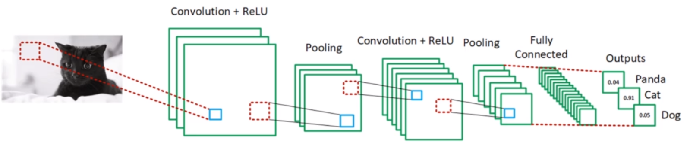
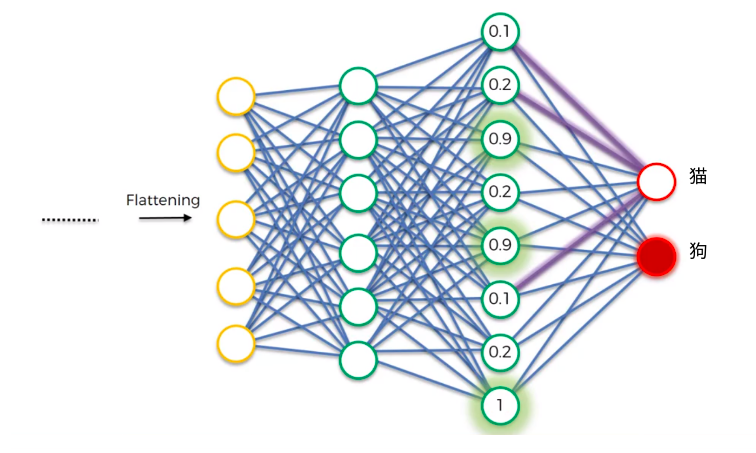

01-CNN入门¶

为什么需要cnn¶
看你还是看右， 你的脑子在跳跃。
我们大脑看feature 来进行特征识别， 看左和看右是不一样的感受。
多个特征，脑子不能决定，心里好憋的慌。
神经网络处理图片的过程和我们人类是非常类似的。
什么是卷积和图像特征¶
回顾opencv的卷积核，卷积核准确的讲叫特征提取器
1 2 3 4 5 6 7 8 9 10 11 12 13 14 15 | |
卷积的过程复习¶
- stride 步长 ，步长越大，数据量压缩的越多
-
depth 多少个特征提取器，分多少层
-
padding 是否补齐数据
卷积的目的¶
- 减少了图像的数据量。make the image smaller，train faster 64 x 64 x 3 = 12288 如果是普通的图片呢？ 1920 x 1080
- 增强了feature， 鼻子，眼睛，头发等，这些是feature，人并不是处理所有的信息的，人只处理特征值
- 卷积神经网络的目标之一， 通过训练，寻找合适的卷积核，用来侦测不同的feature
- 强化关键信息，弱化无关数据

卷积核与图像特征¶
高斯卷积核，模糊卷积核，中值卷积核...这些都是人通过看规律找到的，cnn的作用就是让神经网络自己找合适的卷积核，具体的可视化，我们后面通过代码给大家来查看。
Relu层¶
还记得之前的激活函数吗？
跟激活函数类似，过滤掉低于0的，非法数值。因为图片的像素值小于0 是没有意义的。
pooling池化¶
池化，max pooling 也叫down sampling，降采样
这些图片大家一看就知道是豹子， 那么怎么教计算机能识别这是豹子呢？ 要找到豹子的特征， 豹子实际上由纹理，鼻子，脸部轮廓等很多特征组成，我们要想办法找到豹子在图片熵的位子，豹子脸的朝向，旋转角度等信息。
池化技术就非常的合适。
我们来看一个步长为2的池化操作
max pooling 是找到若干个点中最大的，把他保留下来。
好处，
-
提炼出了特征点， 即使图片旋转，也不影响特征点的提取
-
降低了过拟合的可能性
-
减少了75%的数据量
论文出处：http://ais.uni-bonn.de/papers/icann2010_maxpool.pdf
flattening 打平¶
降维打击，把二维的数据用一维数据去表达
全连接层 FC层¶
数据经过处理完毕后， 数据大小减少了，特征明显了，我们可以进一步的交给神经网络来进行训练了
卷积干的事情是什么？ 卷积是把特征降维提取出来，然后交给神经网络去处理。
卷积神经网络全景图¶
反向传播 backpropagation¶
强者更强，弱者更弱，物竞天择。
回顾感知机的梯度下降算法？ 正确的点，离我远点，错误的点，离我近点
